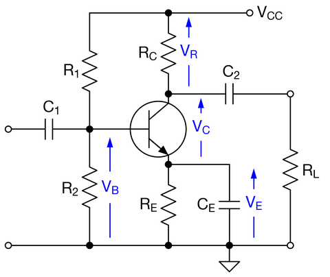

負荷 RL に取り出せる電圧を最大にするための VR と VC の最適配分は、 VR : VC = 1 + ε : 1 （ε = RC / RL） （4.13） によって与えられる。式（4.13）における「1」が、取り出せる振幅に相当している。 また、バイアスの安定性も考慮すると、 VR : VC : VE = 1 + ε : 1 : 0.2～1 （4.14） が最適である。 ベース接地回路においても、最適バイアス電圧の配分は式（4.14）によって与えられる。